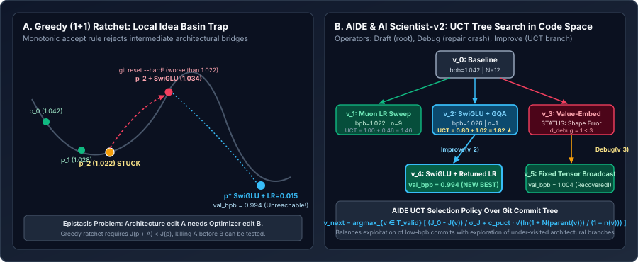

From Greedy Hill-Climbing to Code-Space Tree Search: Local Idea Basins, AIDE, and The AI Scientist v2
Why Karpathy’s linear Git ratchet is mathematically a $(1{+}1)$-Evolution Strategy that stalls on epistatic two-step architectural changes, how Weco AI’s AIDE turns code optimization into a UCT tree search with Draft, Debug, and Improve operators, and how Sakana AI’s The AI Scientist-v2 and the community Fork-and-Flush pattern escape local idea basins.
In Chapter 01, we saw how Karpathy’s minimalist autoresearch loop advances a single Git branch forward whenever a candidate edit $p_{\text{cand}}$ achieves a strictly lower Validation Bits-Per-Byte ($J(p_{\text{cand}}) < J(p_t)$) and immediately runs git reset --hard otherwise. That linear ratchet is extraordinarily effective for the first $15$–$30$ overnight experiments. Yet anyone who runs a greedy ratchet for $100+$ iterations observes the same phenomenon: the agent settles into micro-tuning learning-rate decimals ($0.024 \to 0.0245 \to 0.0242$) while reverting every bold architectural change.

val_bpb until a companion hyperparameter edit $B$ is applied. Right: AIDE (Jiang et al., 2025) and The AI Scientist-v2 represent commits as a tree $\mathcal{T}$, using UCT exploration bonuses to revisit promising architectural branches ($v_2$) and a dedicated Debug operator to recover crashed ideas ($v_3 \to v_5$).1. Mathematical Diagnosis: Epistasis and the $(1{+}1)$-Ratchet Barrier
Formally, Karpathy’s linear Git ratchet is a $(1{+}1)$-Evolution Strategy (or $(1{+}1)$ stochastic hill-climber) over the discrete program graph $\mathcal{G} = (\mathcal{P}, \mathcal{E})$. Starting from incumbent $p_t$, the LLM samples a neighbor $p_{\text{cand}} \sim q_\phi(\cdot \mid p_t, \mathcal{H}_t)$ and applies the zero-temperature Metropolis acceptance rule:
Why does zero-temperature acceptance trap the agent in a local idea basin? In neural architecture and optimizer co-design, code edits exhibit strong epistasis (non-additivity): the marginal effect of edit $A$ changes sign depending on whether edit $B$ is present.
Suppose our current incumbent $p_t$ has tuned its Muon learning rate $\eta = 0.028$ and hidden width $d_{\text{ff}} = 4 d_{\text{model}}$ specifically for a $\text{ReLU}^2$ MLP, achieving $J(p_t) = 1.0220$. Consider two atomic edits:
- Edit $A$ (Architectural swap): Replace the $2$-matrix $\text{ReLU}^2$ MLP with a $3$-matrix gated SwiGLU MLP. Without adjusting $d_{\text{ff}}$ or $\eta$, the $3$-matrix MLP adds $50\%$ more MLP FLOPs per step (reducing the number of steps completed in $T_{\text{budget}}=300\text{ s}$) and changes gradient norm scales, yielding $J(p_t \oplus A) = 1.0340 > 1.0220$.
- Edit $B$ (Companion retuning): Scale $d_{\text{ff}} \to \frac{2}{3}(4 d_{\text{model}})$ to match parameter/FLOP count and adjust $\eta \to 0.018$. Together with SwiGLU, the joint configuration achieves a major breakthrough: $J(p_t \oplus A \oplus B) = 0.9940$.
Under the greedy ratchet, if the agent follows the standard scientific rule in program.md (“change one thing at a time so you can attribute improvements”) and tests Edit $A$ first:
Edit $A$ is immediately wiped from `train.py` and recorded in `results.tsv` as a `discard`. Even worse, suppose the LLM proposes atomic edit $A$ with probability $p_A$ and atomic edit $B$ with probability $p_B$, but only proposes the combined multi-hunk edit $A \oplus B$ in a single turn with probability $p_{AB} \le \gamma\, p_A p_B$ (where $\gamma \ll 1$ because single-hypothesis prompts penalize bundled edits). Furthermore, bundled $k$-hunk edits suffer an exponentially higher syntax/shape crash rate $1 - (1 - \epsilon)^k$. Thus, the expected number of 5-minute trials to cross a $k$-edit epistatic valley under a greedy ratchet scales exponentially in $k$:
2. AIDE: Framing Machine Learning Engineering as Code-Space Tree Search
Jiang et al. (2025, Weco AI) introduced AIDE (AI-Driven Exploration in the Space of Code), the scaffolding that powered top submissions on OpenAI’s MLE-bench ($75$ Kaggle competitions) and METR’s RE-Bench. Instead of maintaining a single linear `HEAD`, AIDE maintains an explicit directed solution tree $\mathcal{T} = (\mathcal{V}, \mathcal{E})$ where every node $v \in \mathcal{V}$ is a complete snapshot of the script (in Git terms, a distinct commit hash $c(v)$) annotated with its execution status, validation score $J(v)$, stderr trace, and visit count $n(v)$.
At each iteration $t$, a Search Policy $\pi_{\text{tree}}(\mathcal{T})$ chooses one of three structural operators:
Draft()(Root Diversification): While the number of root children $|\text{Children}(v_0)| < N_{\text{draft}}$ (typically $N_{\text{draft}} = 3\text{–}5$), the agent generates distinct macro-designs from the base template $v_0$. This seeds multiple distinct basins in parallel rather than committing to the very first trajectory.Debug(v)(Targeted Crash Recovery): In Karpathy’s greedy ratchet, if a great architectural idea has a trivial shape mismatch (`RuntimeError: mat1 and mat2 shapes cannot be multiplied`) or exceeds VRAM by $2\%$, `git reset --hard` destroys the code completely. AIDE separates buggy nodes $\mathcal{V}_{\text{buggy}} = \{v \in \mathcal{V} : \text{status}(v) = \texttt{CRASH} \land d_{\text{debug}}(v) < D_{\max}\}$ and selects a buggy node with probability $p_{\text{debug}}$ to pass its exact traceback to a repair prompt, bounded by maximum repair depth $D_{\max} = 3$.Improve(v)(UCT Branch Expansion): Otherwise, the harness selects a valid node $v^* \in \mathcal{V}_{\text{valid}}$ to branch from. While greedy AIDE variants pick $\arg\min_{v} J(v)$ with $\varepsilon$-greedy exploration, the principled tree-search policy (used in MCTS-AIDE and The AI Scientist-v2) maximizes the Upper Confidence Bound for Trees (UCT):
where $J(v_0)$ is the baseline `val_bpb`, $\sigma_J > 0$ is the typical improvement scale (e.g., $\sigma_J = 0.020\text{ bpb}$), $n(v)$ is the number of children already spawned from node $v$, $N(\operatorname{parent}(v))$ is the total visits to $v$’s parent subtree, and $c_{\text{puct}} > 0$ controls the exploration-exploitation balance.
Worked numerical example: UCT selecting an architectural bridge over a saturated basin
Suppose our baseline root $v_0$ has $J(v_0) = 1.0420\text{ bpb}$, total parent trials $N(v_0) = 12$, reward scale $\sigma_J = 0.020$, and exploration constant $c_{\text{puct}} = 0.65$. Compare three valid nodes in $\mathcal{T}$:
| Node $v$ | val_bpb $J(v)$ | Child Count $n(v)$ | Exploitation $Q(v)=\frac{1.042-J(v)}{0.020}$ | Exploration $0.65\sqrt{\frac{2.5649}{1+n(v)}}$ | Total Score $\operatorname{UCT}(v)$ |
|---|---|---|---|---|---|
| $v_1$ (Muon LR micro-tuning) | $\mathbf{1.0220}$ | $9$ | $\frac{0.0200}{0.020} = 1.000$ | $0.65\sqrt{2.5649 / 10} = 0.329$ | $1.000 + 0.329 = 1.329$ |
| $v_2$ (SwiGLU + GQA swap) | $1.0260$ | $1$ | $\frac{0.0160}{0.020} = 0.800$ | $0.65\sqrt{2.5649 / 2} = 0.736$ | $0.800 + 0.736 = \mathbf{1.536}\;\bigstar$ |
| $v_3$ (Untuned Cosine Schedule) | $1.0380$ | $2$ | $\frac{0.0040}{0.020} = 0.200$ | $0.65\sqrt{2.5649 / 3} = 0.601$ | $0.200 + 0.601 = 0.801$ |
Even though $v_1$ currently holds the lowest raw `val_bpb` ($1.0220$ vs. $1.0260$), it has already been expanded $n(v_1)=9$ times with diminishing returns. UCT selects $v_2$ ($\operatorname{UCT}=1.536 > 1.329$), checks out commit $c(v_2)$, and allows the agent to tune the SwiGLU learning rate and hidden dimension on the second hop—discovering $v_4$ at $J(v_4) = 0.9940$!
3. Progressive Agentic Tree Search in The AI Scientist-v2 & Fork-and-Flush
Sakana AI’s evolution from The AI Scientist-v1 (Lu et al., 2024) to The AI Scientist-v2 (Yamada et al., 2025) mirrors this exact transition from linear iteration to staged tree search:
- Why v1 hit a ceiling: The AI Scientist-v1 relied on a human-crafted baseline repository and a linear sequence of 4–5 pre-planned experiment edits. If step 2 introduced a subtle bug or degraded validation loss, subsequent iterations compounded the error.
- Progressive 4-Stage Tree Search in v2: The AI Scientist-v2 introduced an Experiment Manager Agent that organizes the tree $\mathcal{T}$ into four progressive stages, advancing to stage $s+1$ only when stage $s$ meets its completion criteria:
- Stage 1 (Preliminary Investigation): Drafts initial working implementations via `Draft` and `Debug` until at least $K_1$ non-crashing baseline nodes execute cleanly within budget.
- Stage 2 (Hyperparameter & Stabilization Tuning): Performs localized tree expansions around the best Stage-1 node to ensure the baseline is well-tuned before architectural comparisons.
- Stage 3 (Creative Research Exploration): Uses UCT with higher exploration $c_{\text{puct}}$ to test structural hypotheses (new loss terms, attention variants, regularization).
- Stage 4 (Component-Wise Ablation Study): Branches off the winning Stage-3 node by systematically removing one modification at a time ($\Delta_1, \Delta_2, \dots$) to verify that every kept component genuinely contributes to the final score!
In lightweight single-GPU `autoresearch` forks, community practitioners approximate this multi-stage tree without heavy orchestration via the Fork-and-Flush Protocol:
where $K_{\text{stall}} \in [6, 10]$ consecutive `discard` runs triggers an automatic backtrack to an earlier ancestor commit $c_{\text{ancestor}}$ while flushing the local failure clutter from `results.tsv`.
4. Reference Implementation: Git-Backed AIDE / UCT Tree Search Harness
Because Git natively stores a content-addressable Directed Acyclic Graph (DAG) of commits, we can upgrade Karpathy’s linear `autoresearch` ratchet into a full AIDE UCT Tree Search Harness without duplicating workspace directories: every tree node $v \in \mathcal{T}$ simply stores its Git commit hash `v.commit_hash` (even for crashed or non-record-setting valid runs, committed on detached nodes or lightweight refs `refs/autoresearch/node-
from dataclasses import dataclass, field
import math
import subprocess
import pathlib
@dataclass
class CodeTreeNode:
node_id: int
commit_hash: str
parent_id: int | None
val_bpb: float | None # None if crashed
peak_vram_gb: float
status: str # "valid" | "buggy"
hypothesis: str
error_trace: str = ""
debug_depth: int = 0
children_ids: list[int] = field(default_factory=list)
class GitUCTTreeHarness:
"""
Upgrades a linear Git ratchet into an AIDE-style Code-Space Tree Search
using Git refs (`refs/autoresearch/n{id}`) to store every tree node.
"""
def __init__(
self,
repo_dir: pathlib.Path,
baseline_bpb: float,
sigma_bpb: float = 0.020,
c_puct: float = 0.65,
max_debug_depth: int = 2,
):
self.repo_dir = repo_dir
self.baseline_bpb = baseline_bpb
self.sigma_bpb = sigma_bpb
self.c_puct = c_puct
self.max_debug_depth = max_debug_depth
self.nodes: dict[int, CodeTreeNode] = {}
def uct_score(self, node: CodeTreeNode) -> float:
assert node.status == "valid" and node.val_bpb is not None
q_val = (self.baseline_bpb - node.val_bpb) / self.sigma_bpb
parent_visits = (
len(self.nodes[node.parent_id].children_ids)
if node.parent_id is not None
else sum(len(n.children_ids) for n in self.nodes.values())
)
n_vis = len(node.children_ids)
u_val = self.c_puct * math.sqrt(math.log(1.0 + max(1, parent_visits)) / (1.0 + n_vis))
return q_val + u_val
def select_next_operation(self) -> tuple[str, CodeTreeNode]:
"""
AIDE Search Policy:
1. If any buggy node has 0 children and debug_depth < max_debug_depth, Debug it.
2. Otherwise, select the valid node maximizing UCT(v) for Improve(v).
"""
repairable = [
v for v in self.nodes.values()
if v.status == "buggy" and len(v.children_ids) == 0 and v.debug_depth < self.max_debug_depth
]
if repairable:
return "Debug", repairable[-1]
valid_nodes = [v for v in self.nodes.values() if v.status == "valid"]
best_parent = max(valid_nodes, key=self.uct_score)
return "Improve", best_parent
def checkout_parent(self, parent: CodeTreeNode) -> None:
subprocess.run(
["git", "checkout", "--detach", parent.commit_hash],
cwd=self.repo_dir,
check=True,
capture_output=True,
)
def record_child(
self,
parent: CodeTreeNode,
val_bpb: float | None,
peak_vram_gb: float,
hypothesis: str,
error_trace: str = "",
) -> CodeTreeNode:
new_id = len(self.nodes)
subprocess.run(["git", "add", "train.py"], cwd=self.repo_dir, check=True)
subprocess.run(
["git", "commit", "--allow-empty", "-m", f"[node-{new_id}] {hypothesis}"],
cwd=self.repo_dir,
check=True,
capture_output=True,
)
commit_hash = subprocess.check_output(
["git", "rev-parse", "--short=8", "HEAD"], cwd=self.repo_dir, text=True
).strip()
# Pin a lightweight Git ref so GC never prunes off-trunk tree nodes
subprocess.run(
["git", "update-ref", f"refs/autoresearch/node-{new_id}", commit_hash],
cwd=self.repo_dir,
check=True,
)
is_valid = val_bpb is not None and not math.isnan(val_bpb)
child = CodeTreeNode(
node_id=new_id,
commit_hash=commit_hash,
parent_id=parent.node_id,
val_bpb=val_bpb if is_valid else None,
peak_vram_gb=peak_vram_gb,
status="valid" if is_valid else "buggy",
hypothesis=hypothesis,
error_trace=error_trace,
debug_depth=0 if is_valid else parent.debug_depth + 1,
)
self.nodes[new_id] = child
parent.children_ids.append(new_id)
return child5. Questions worth answering
Debug operator at a small maximum depth $D_{\max} \in \{2, 3\}$ instead of debugging a broken node until it runs?Some LLM-proposed architectural ideas are fundamentally incompatible with the hardware or tensor library (e.g., an attention kernel that requires $140\text{ GB}$ of activation memory on an $80\text{ GB}$ GPU, or an unsupported custom autograd backward pass). Without a hard cap $D_{\max}$, a deterministic repair loop will burn dozens of consecutive iterations trying to fix an unfixable branch. Capping $d_{\text{debug}}(v) \le D_{\max}$ salvages syntax and shape bugs quickly while abandoning dead-end designs.
During a 50-node search path $v_0 \to v_{i_1} \to \cdots \to v^*$, noisy validation evaluations ($\pm 0.001\text{ bpb}$ seed variance) allow complexity bloat (dead hyperparameters, redundant normalization layers, or neutral gates) to hitchhike into the winning commit. Running single-deletion ablations $v^* \setminus \{\Delta_k\}$ prunes complexity that adds code lines or VRAM without contributing statistically significant `val_bpb` gains.